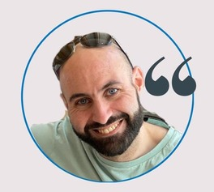

+962 78 865 8549

Abdallah Hamad
Infrastructure Manager
Phone
Email
Abdallah_Hamad@Live.com
Location
Amman, Jordan
Birthday
Dec 02, 1982
Individual Reflective Piece
Module : Security & Risk Management
Name : Abdallah Hamad
University : University Of Essex
Date : Apr 22, 2024
Introduction
Participating in this module's project to digitally transform and globally integrate a traditional business offered significant learning opportunities and moments for self-assessment. This reflection not only explores the key contributions I made and the knowledge I gained but also critically examines my approach to security standards and risk modeling techniques, identifying vital areas for improvement.
Reflection on Security and Risk Management Processes
What: My role was integral in developing a risk management framework to navigate the complexities of transitioning to a digital and global marketplace. This included quantitative risk assessments like Monte Carlo simulations and conducting a Business Impact Analysis.
So What: Despite these efforts, the project lacked a rigorous integration of established security standards, which are crucial for protecting against increasingly sophisticated cyber threats. This oversight might have exposed the project to potential risks that could have been mitigated with a standards-aligned approach.
Now What: To ensure that future projects are effective and secure, I will prioritize learning about and implementing international security standards such as ISO/IEC 27001. This will involve formal training in cybersecurity management and seeking certifications that will credential my ability to integrate these standards into complex projects.
Reflection on Individual Contributions to Team Activities
What: I was responsible for conducting a SWOT analysis and analyzing the strategic implications of the company's decision-making regarding its online presence.
So What: While these analyses were thorough, reflecting on them revealed a missed opportunity to suggest to the members a broader array of risk modeling techniques that could have provided more profound insights into potential strategic vulnerabilities.
Now What: To broaden my analytical toolkit, I am committed to learning about and applying more diverse risk modeling methods, such as dynamic risk assessment and predictive modeling, in future projects. Engaging in advanced analytics courses and participating in relevant workshops will be part of this professional development.
Reflection on Experience as a Member of a Development Team
What: My experience in a team with varied engagement levels taught me about the dynamics of group work in a high-pressure environment. My role often involved mediating and motivating, which is crucial for maintaining project momentum.
So What: To excel in a team, one must possess a robust skill set that includes effective communication and proactive conflict resolution. Recent experiences have highlighted the importance of these skills in navigating challenges and maintaining a smooth workflow. On the other hand, our team also encountered non-responsive members, requiring equally crucial skills to ensure the team’s success. By honing these skills, we can collaborate more effectively, overcome obstacles, and achieve our objectives efficiently.
Now What: I plan to focus on conflict resolution and team motivation strategies. Increasing these skills will help me improve my team leader and collaborator skills, improving my ability to create a positive and productive team environment for upcoming projects.
Reflection on Impact on Professional/Personal Development
What: The module significantly improved my skills in cybersecurity, strategic planning, and risk management, which are critical areas for my aspirations in technology and business leadership.
So What: It was a significant learning moment when I realized that my approach to integrating security standards and risk modeling techniques could be more comprehensive. This experience made me aware of the continuous nature of professional development and emphasized the need to remain adaptable and informed about best practices in this field.
Now What: I am dedicated to continuously improving my skills and knowledge by critically analyzing cybersecurity and strategic management requirements. Furthermore, I intend to join professional networks and forums focusing on digital transformation and risk management to stay current on industry trends and emerging technologies.
Conclusion
Through this reflective analysis, I have had the opportunity to recognize both my successes and shortcomings in the module. This has enabled me to establish a clear and actionable plan for my future development. By acknowledging my achievements and identifying areas for improvement, I am better equipped to make meaningful contributions to future projects and advance my career in an ever-changing digital environment.
References:
Murray, M. & Kujundzic, N. (2005) Critical reflection: a textbook for critical thinking McGill-Queen's Press-MQUP.

Evaluation of the final project
Module : Security & Risk Management
Name : Abdallah Hamad
University : University Of Essex
Date : Apr 22, 2024
Introduction
For our final module assessment, we evaluated a project transitioning from a traditional business to a digital enterprise. This evaluation examines the project's evolution from initial plans to sophisticated implementations, highlighting key accomplishments and areas for improvement.
Objective Comparison
Initial Goals: In Unit 6, the project was conceptualized to enhance digital capabilities and expand market reach, focusing primarily on building an online presence.
Expanded Goals in Unit 11: By the project's culmination, these objectives had broadened significantly to incorporate robust cybersecurity measures tailored to safeguard the online transition and a detailed analysis of the international supply chain to optimize global operations.
Reflection: The expansion of goals reflects a responsive adaptation to emerging industry trends and internal analysis, showcasing a dynamic approach to strategic planning.
Risk Management Evolution
Initial Assessments: The project began with identifying fundamental vulnerabilities, particularly in cybersecurity threats and supply chain inefficiencies, which were critical given the shift towards digital operations.
Advanced Mitigation Strategies: By Unit 11, an implementation of risk mitigation strategies using Monte Carlo simulations and Business Impact Analysis. These tools helped us model risk scenarios and their potential impacts, enabling targeted risk management.
Expected Outcomes: These advanced strategies are expected to reduce potential disruptions, enhancing resilience against operational risks significantly.
Business Continuity
Strategy Implementation: The adoption of cloud-based solutions aimed to improve operational efficiency and secure data management.
Impact on Operations: This shift streamlined operations and built a robust framework for disaster recovery and business continuity, which is crucial for maintaining uptime and service delivery in a digital landscape.
Compliance and Standards
Initial Compliance Goals: Align the new digital operations with GDPR requirements and ISO/IEC 27001 standards as a foundation for global business practices.
Download Monte Carlo Simulation calculation Sheet : Unit-11 Formula.xlsx
Individual contribution on Team Project
Module : Security & Risk Management
Name : Abdallah Hamad
University : University Of Essex
Date : Apr 22, 2024
Introduction
Project Overview: The project aimed to evaluate the transition of Pampered Pets, a conventional physical business, into a modern and competitive online business. The objective was to comprehend the fundamental cybersecurity necessities for developing an online system and assess the industry's impact by not establishing an online presence.
Team Composition and Dynamics: The team consisted of four members, with three actively collaborating. Despite challenges posed by one non-responsive team member, the project progressed with clear responsibilities divided among the active members.
Main Contributions
- SWOT Analysis:
Task Description: Conducted a SWOT analysis To facilitate Pampered Pets' digital transformation, a study of their internal strengths and weaknesses, as well as external opportunities and threats.
Role and Execution:
Strengths: Highlighted high-quality products, strong local supply chain relationships, existing digital tools for operations, and a dedicated staff.
Weaknesses: The limited digital presence, dependency on local suppliers, and a need for online marketing experience pointed out.
Opportunities: Emphasized the potential for digital market expansion and product diversification.
Threats: Addressed competitive disadvantages and cybersecurity risks.
Collaborative Efforts: Worked closely with team members to align the SWOT analysis with broader project objectives, ensuring a comprehensive understanding of the strategic landscape.
- Analysis of Potential Consequences of Not Establishing an Online Presence:
Task Description: Analyzed the broader implications for Pampered Pets if it decided against establishing an online presence, focusing on market reach, sales growth, competitive position, and customer engagement.
Findings and Impact:
Market Reach: Identified geographic and demographic limitations faced by Pampered Pets due to its lack of an online presence
Sales Growth: Discussed how e-commerce trends could lead to missed sales opportunities and limited scalability.
Competitive Disadvantage: Explained how competitors with online capabilities could capture a larger market share.
Customer Engagement: Stressed the importance of adapting to market changes rapidly, a capability enhanced by online channels.
Conclusion
This project was instrumental in enhancing the strategic thinking and understanding of digital transformation in retail. I deepened my analytical skills by conducting a SWOT analysis and evaluating the implications of not establishing an online presence. I gained a nuanced understanding of how digital strategies can be leveraged to mitigate traditional business limitations. These experiences have prepared me to tackle similar strategic challenges in the future and equipped me with a better grasp of cybersecurity implications and market dynamics. I am confident applying these skills to drive digital innovation and strategic development in any business context.